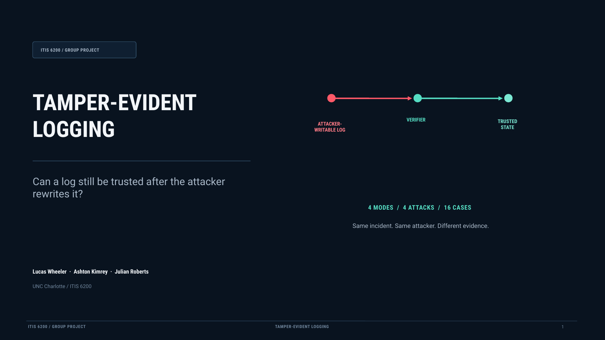
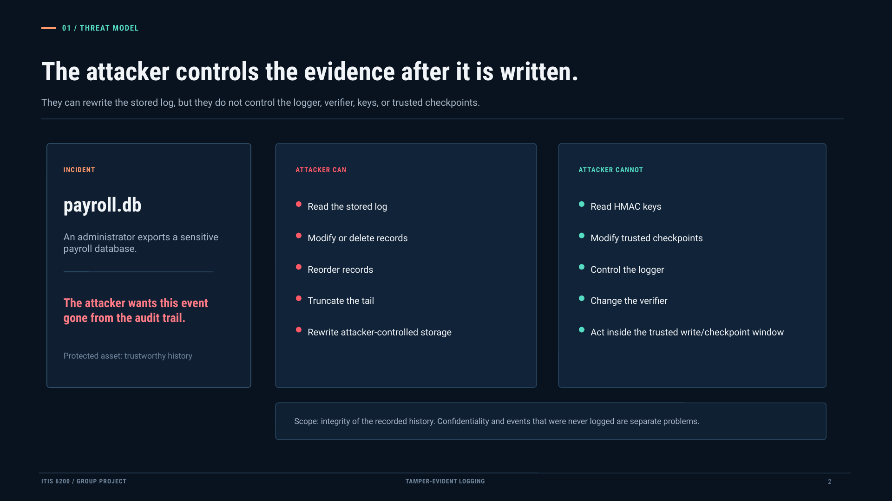
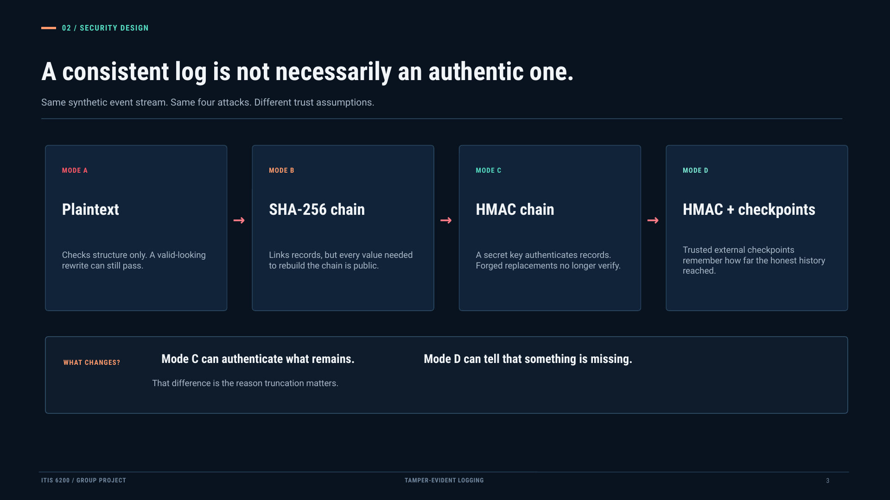
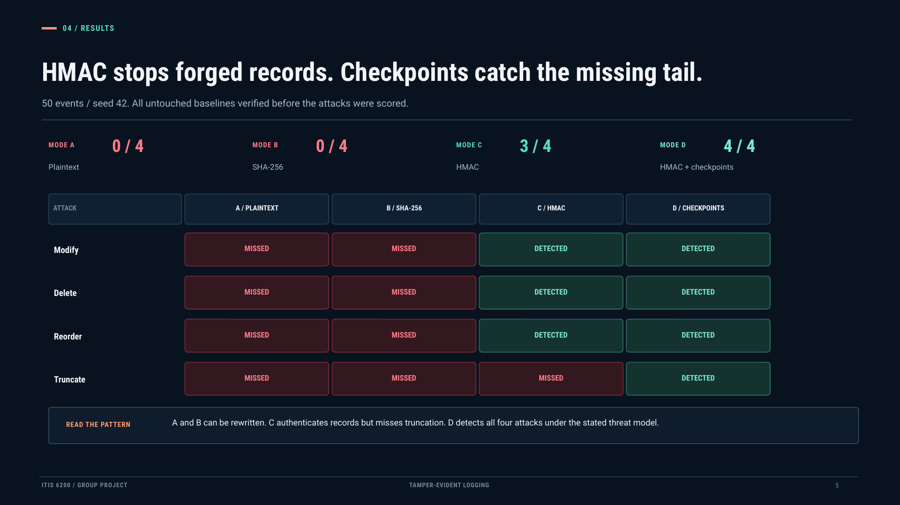
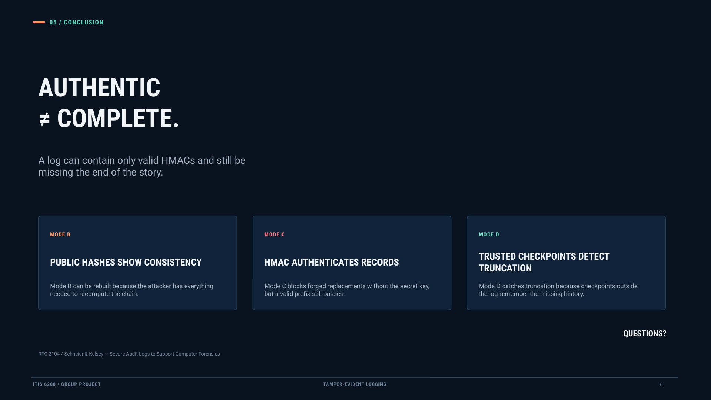

Slide 1 · image pending
assets/slides/slide-1.png
Slide 2 · image pending
assets/slides/slide-2.png
Slide 3 · image pending
assets/slides/slide-3.png
Slide 5 · image pending
assets/slides/slide-5.png
Slide 6 · image pending
assets/slides/slide-6.png